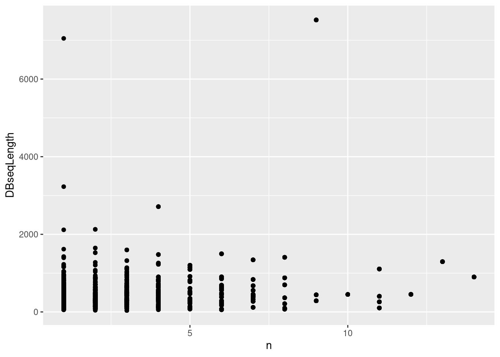
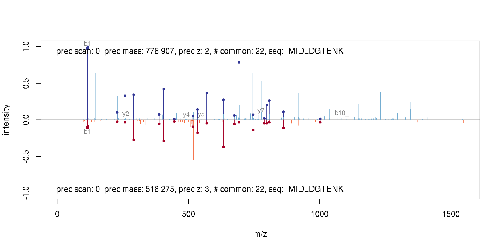

Chapter 6 Identification data
6.1 Identification data.frame
Let’s use the identification from from msdata:
idf <- msdata::ident(full.names = TRUE)
basename(idf)## [1] "TMT_Erwinia_1uLSike_Top10HCD_isol2_45stepped_60min_01-20141210.mzid"The easiest way to read identification data in mzIdentML (often
abbreviated with mzid) into R is to read it with readMzIdData,
that will parse it, process it, and return a data.frame:
iddf <- readMzIdData(idf)
head(iddf)## sequence spectrumID
## 1 RQCRTDFLNYLR controllerType=0 controllerNumber=1 scan=2949
## 2 ESVALADQVTCVDWRNRKATKK controllerType=0 controllerNumber=1 scan=6534
## chargeState rank passThreshold experimentalMassToCharge
## 1 3 1 TRUE 548.2856
## 2 2 1 TRUE 1288.1528
## calculatedMassToCharge peptideRef modNum isDecoy post pre start end
## 1 547.9474 Pep77 1 FALSE V R 574 585
## 2 1288.1741 Pep108 1 FALSE G R 69 90
## DatabaseAccess DBseqLength DatabaseSeq
## 1 ECA2006 1295
## 2 ECA1676 110
## DatabaseDescription scan.number.s. acquisitionNum
## 1 ECA2006 ATP-dependent helicase 2949 2949
## 2 ECA1676 putative growth inhibitory protein 6534 6534
## spectrumFile
## 1 TMT_Erwinia_1uLSike_Top10HCD_isol2_45stepped_60min_01-20141210.mzML
## 2 TMT_Erwinia_1uLSike_Top10HCD_isol2_45stepped_60min_01-20141210.mzML
## idFile
## 1 TMT_Erwinia_1uLSike_Top10HCD_isol2_45stepped_60min_01-20141210.mzid
## 2 TMT_Erwinia_1uLSike_Top10HCD_isol2_45stepped_60min_01-20141210.mzid
## MS.GF.RawScore MS.GF.DeNovoScore MS.GF.SpecEValue MS.GF.EValue MS.GF.QValue
## 1 10 101 4.617121e-08 0.1321981 0.5254237
## 2 12 121 7.255875e-08 0.2087481 0.6103896
## MS.GF.PepQValue modPeptideRef modName modMass modLocation
## 1 0.5490196 Pep77 Carbamidomethyl 57.02146 3
## 2 0.6231884 Pep108 Carbamidomethyl 57.02146 11
## subOriginalResidue subReplacementResidue subLocation
## 1 <NA> <NA> NA
## 2 <NA> <NA> NA
## [ reached 'max' / getOption("max.print") -- omitted 4 rows ]When adding identification data with the addIdentificationData
function (as shown below), the data is first read with readMzIdData,
and is then cleaned up:
- only PSMs matching the regular (non-decoy) database are retained;
- PSMs or rank greater than 1 are discarded;
- only proteotypic peptides are kept, i.e. those that match to a unique peptide.
## at this stage, we still have all the PSMs
table(iddf$isDecoy)##
## FALSE TRUE
## 2906 2896table(iddf$rank)##
## 1 2 3 4
## 5487 302 12 1Exercise
This behaviour can be replicates with the
filterIdentificationDataFrame function. Try it out for yourself.
iddf2 <- filterIdentificationDataFrame(iddf)
table(iddf2$isDecoy)##
## FALSE
## 2710table(iddf2$rank)##
## 1
## 2710Exercise
The tidyverse
tools are fit for data wrangling with identification data. Using the
above identification dataframe, calculate the length of each peptide
(you can use nchar with the peptide sequence sequence) and the
number of peptides for each protein (defined as
DatabaseDescription). Plot the length of the proteins against their
respective number of peptides. Optionally, stratify the plot by the
peptide e-value score (MS.GF.EValue) using for example cut to
define bins.
suppressPackageStartupMessages(library("dplyr"))
iddf2 <- as_tibble(iddf2) %>%
mutate(peplen = nchar(sequence))
npeps <- iddf2 %>%
group_by(DatabaseDescription) %>%
tally
iddf2 <- full_join(iddf2, npeps)## Joining, by = "DatabaseDescription"library("ggplot2")
ggplot(iddf2, aes(x = n, y = DBseqLength)) + geom_point()Figure 6.1: Identifcation data wrangling 1
iddf2$evalBins <- cut(iddf2$MS.GF.EValue, summary(iddf2$MS.GF.EValue))
ggplot(iddf2, aes(x = n, y = DBseqLength, color = peplen)) +
geom_point() +
facet_wrap(~ evalBins)Figure 6.2: Identifcation data wrangling 2
6.2 Low level access to id data
There are two packages that can be used to parse mzIdentML files,
namely mzR (that we have already used for raw data) and mzID. The
major difference is that the former leverages C++ code from
proteowizard and is hence faster than the latter (which uses the
XML R package). They both work in similar ways.
| Data type | File format | Data structure | Package | |
|---|---|---|---|---|
| 4 | Identification | mzIdentML | mzRident | mzR |
| 5 | Identification | mzIdentML | mzID | mzID |
6.2.1 mzID
The main functions are mzID to read the data into a dedicated data
class and flatten to transform it into a data.frame.
idf## [1] "/home/lgatto/R/x86_64-pc-linux-gnu-library/4.0/msdata/ident/TMT_Erwinia_1uLSike_Top10HCD_isol2_45stepped_60min_01-20141210.mzid"library("mzID")##
## Attaching package: 'mzID'## The following object is masked from 'package:dplyr':
##
## idid <- mzID(idf)## reading TMT_Erwinia_1uLSike_Top10HCD_isol2_45stepped_60min_01-20141210.mzid... DONE!id## An mzID object
##
## Software used: MS-GF+ (version: Beta (v10072))
##
## Rawfile: /home/lg390/dev/01_svn/workflows/proteomics/TMT_Erwinia_1uLSike_Top10HCD_isol2_45stepped_60min_01-20141210.mzML
##
## Database: /home/lg390/dev/01_svn/workflows/proteomics/erwinia_carotovora.fasta
##
## Number of scans: 5343
## Number of PSM's: 5656Various data can be extracted from the mzID object, using one the
accessor functions such as database, software, scans, peptides,
… The object can also be converted into a data.frame using the
flatten function.
head(flatten(id))## spectrumid scan number(s) acquisitionnum
## 1 controllerType=0 controllerNumber=1 scan=5782 5782 5782
## 2 controllerType=0 controllerNumber=1 scan=6037 6037 6037
## 3 controllerType=0 controllerNumber=1 scan=5235 5235 5235
## passthreshold rank calculatedmasstocharge experimentalmasstocharge
## 1 TRUE 1 1080.232 1080.233
## 2 TRUE 1 1002.212 1002.209
## 3 TRUE 1 1189.280 1189.284
## chargestate ms-gf:denovoscore ms-gf:evalue ms-gf:pepqvalue ms-gf:qvalue
## 1 3 174 1.086033e-20 0 0
## 2 3 245 1.988774e-19 0 0
## 3 3 264 5.129649e-19 0 0
## ms-gf:rawscore ms-gf:specevalue assumeddissociationmethod isotopeerror
## 1 147 3.764831e-27 HCD 0
## 2 214 6.902626e-26 HCD 0
## 3 211 1.778789e-25 HCD 0
## isdecoy post pre end start accession length
## 1 FALSE S R 84 50 ECA1932 155
## 2 FALSE R K 315 288 ECA1147 434
## 3 FALSE A R 224 192 ECA0013 295
## description pepseq
## 1 outer membrane lipoprotein PVQIQAGEDSNVIGALGGAVLGGFLGNTIGGGSGR
## 2 trigger factor TQVLDGLINANDIEVPVALIDGEIDVLR
## 3 ribose-binding periplasmic protein TKGLNVMQNLLTAHPDVQAVFAQNDEMALGALR
## modified modification
## 1 FALSE <NA>
## 2 FALSE <NA>
## 3 FALSE <NA>
## idFile
## 1 TMT_Erwinia_1uLSike_Top10HCD_isol2_45stepped_60min_01-20141210.mzid
## 2 TMT_Erwinia_1uLSike_Top10HCD_isol2_45stepped_60min_01-20141210.mzid
## 3 TMT_Erwinia_1uLSike_Top10HCD_isol2_45stepped_60min_01-20141210.mzid
## spectrumFile
## 1 TMT_Erwinia_1uLSike_Top10HCD_isol2_45stepped_60min_01-20141210.mzML
## 2 TMT_Erwinia_1uLSike_Top10HCD_isol2_45stepped_60min_01-20141210.mzML
## 3 TMT_Erwinia_1uLSike_Top10HCD_isol2_45stepped_60min_01-20141210.mzML
## databaseFile
## 1 erwinia_carotovora.fasta
## 2 erwinia_carotovora.fasta
## 3 erwinia_carotovora.fasta
## [ reached 'max' / getOption("max.print") -- omitted 3 rows ]
6.2.2 mzR
The mzR interface provides a similar interface. It is however much
faster as it does not read all the data into memory and only extracts
relevant data on demand. It has also accessor functions such as
softwareInfo, mzidInfo, … (use showMethods(classes = "mzRident", where = "package:mzR"))
to see all available methods.
library("mzR")
id2 <- openIDfile(idf)
id2## Identification file handle.
## Filename: TMT_Erwinia_1uLSike_Top10HCD_isol2_45stepped_60min_01-20141210.mzid
## Number of psms: 5759softwareInfo(id2)## [1] "MS-GF+ Beta (v10072) "
## [2] "ProteoWizard MzIdentML 3.0.501 ProteoWizard"The identification data can be accessed as a data.frame with the
psms accessor.
head(psms(id2))## spectrumID chargeState rank passThreshold
## 1 controllerType=0 controllerNumber=1 scan=5782 3 1 TRUE
## 2 controllerType=0 controllerNumber=1 scan=6037 3 1 TRUE
## 3 controllerType=0 controllerNumber=1 scan=5235 3 1 TRUE
## 4 controllerType=0 controllerNumber=1 scan=5397 3 1 TRUE
## 5 controllerType=0 controllerNumber=1 scan=6075 3 1 TRUE
## experimentalMassToCharge calculatedMassToCharge
## 1 1080.2325 1080.2321
## 2 1002.2089 1002.2115
## 3 1189.2836 1189.2800
## 4 960.5365 960.5365
## 5 1264.3409 1264.3419
## sequence peptideRef modNum isDecoy post pre start
## 1 PVQIQAGEDSNVIGALGGAVLGGFLGNTIGGGSGR Pep1 0 FALSE S R 50
## 2 TQVLDGLINANDIEVPVALIDGEIDVLR Pep2 0 FALSE R K 288
## 3 TKGLNVMQNLLTAHPDVQAVFAQNDEMALGALR Pep3 0 FALSE A R 192
## 4 SQILQQAGTSVLSQANQVPQTVLSLLR Pep4 0 FALSE - R 264
## 5 PIIGDNPFVVVLPDVVLDESTADQTQENLALLISR Pep5 0 FALSE F R 119
## end DatabaseAccess DBseqLength DatabaseSeq
## 1 84 ECA1932 155
## 2 315 ECA1147 434
## 3 224 ECA0013 295
## 4 290 ECA1731 290
## 5 153 ECA1443 298
## DatabaseDescription scan.number.s.
## 1 ECA1932 outer membrane lipoprotein 5782
## 2 ECA1147 trigger factor 6037
## 3 ECA0013 ribose-binding periplasmic protein 5235
## 4 ECA1731 flagellin 5397
## 5 ECA1443 UTP--glucose-1-phosphate uridylyltransferase 6075
## acquisitionNum
## 1 5782
## 2 6037
## 3 5235
## 4 5397
## 5 6075
## [ reached 'max' / getOption("max.print") -- omitted 1 rows ]6.3 Adding identification data to raw data
Here are two matching raw and identification data files:
library("MSnbase")
## find path to a mzXML file
rwf <- dir(system.file(package = "MSnbase", dir = "extdata"),
full.name = TRUE, pattern = "mzXML$")
## find path to a mzIdentML file
idf <- dir(system.file(package = "MSnbase", dir = "extdata"),
full.name = TRUE, pattern = "dummyiTRAQ.mzid")We first create the raw data object:
msexp <- readMSData(rwf, verbose = FALSE)
head(fData(msexp))## spectrum
## F1.S1 1
## F1.S2 2
## F1.S3 3
## F1.S4 4
## F1.S5 5The simply add identification data. The matching of spectra from the raw data and the PSMs from the identification data is done internally.
msexp <- addIdentificationData(msexp, idf)
head(fData(msexp))## spectrum acquisition.number sequence chargeState rank
## F1.S1 1 1 VESITARHGEVLQLRPK 3 1
## F1.S2 2 2 IDGQWVTHQWLKK 3 1
## passThreshold experimentalMassToCharge calculatedMassToCharge peptideRef
## F1.S1 TRUE 645.3741 645.0375 Pep2
## F1.S2 TRUE 546.9586 546.9633 Pep1
## modNum isDecoy post pre start end DatabaseAccess DBseqLength DatabaseSeq
## F1.S1 0 FALSE A R 170 186 ECA0984 231
## F1.S2 0 FALSE A K 50 62 ECA1028 275
## DatabaseDescription
## F1.S1 ECA0984 DNA mismatch repair protein
## F1.S2 ECA1028 2,3,4,5-tetrahydropyridine-2,6-dicarboxylate N-succinyltransferase
## scan.number.s. idFile MS.GF.RawScore MS.GF.DeNovoScore
## F1.S1 1 dummyiTRAQ.mzid -39 77
## F1.S2 2 dummyiTRAQ.mzid -30 39
## MS.GF.SpecEValue MS.GF.EValue modPeptideRef modName modMass modLocation
## F1.S1 5.527468e-05 79.36958 <NA> <NA> NA NA
## F1.S2 9.399048e-06 13.46615 <NA> <NA> NA NA
## subOriginalResidue subReplacementResidue subLocation nprot npep.prot
## F1.S1 <NA> <NA> NA 1 1
## F1.S2 <NA> <NA> NA 1 1
## npsm.prot npsm.pep
## F1.S1 1 1
## F1.S2 1 1
## [ reached 'max' / getOption("max.print") -- omitted 3 rows ]6.4 MS/MS database search
While searches are generally performed using third-party software
independently of R or can be started from R using a system call, the
MSGFplus package enables to perform a search using the
MSGF+ engine, as illustrated below.
We search the
TMT_Erwinia_1uLSike_Top10HCD_isol2_45stepped_60min_01-20141210.mzML.gz
file against the fasta file from PXD000001 using MSGFplus.
We first download the fasta files from ProteomeXchange:
fas <- pxget(px, "erwinia_carotovora.fasta")
basename(fas)Below, we setup and run the
search3 In the runMSGF call, the memory allocated to the java virtual machine is limited to 1GB. In general, there is no need to specify this argument, unless you experience an error regarding the maximum heap size..
library("MSGFplus")
msgfpar <- msgfPar(database = fas,
instrument = 'HighRes',
tda = TRUE,
enzyme = 'Trypsin',
protocol = 'iTRAQ')
idres <- runMSGF(msgfpar, mzf, memory=1000)
idres## An mzID object
##
## Software used: MS-GF+ (version: Beta (v10072))
##
## Rawfile: /home/lg390/Documents/Teaching/bioc-ms-prot/TMT_Erwinia_1uLSike_Top10HCD_isol2_45stepped_60min_01-20141210.mzML
##
## Database: /home/lg390/Documents/Teaching/bioc-ms-prot/erwinia_carotovora.fasta
##
## Number of scans: 5343
## Number of PSM's: 5656A graphical interface to perform the search the data and explore the results is also available:
library("MSGFgui")
MSGFgui()
The MSGFgui interface
6.5 Visualising identification data
For this part, let’s use a ready made MSnExp object that is
distributed with the MSnbase package. Simply use the data()
function with the name of the desired data.
library("MSnbase")
data(itraqdata)6.5.1 Annotated spectra and spectra comparison
itraqdata2 <- MSnbase::pickPeaks(itraqdata, verbose = FALSE)
s <- "SIGFEGDSIGR"
plot(itraqdata2[[14]], s, main = s)plot(itraqdata2[[25]], itraqdata2[[28]], sequences = rep("IMIDLDGTENK", 2))
The annotation of spectra is obtained by simulating fragmentation of a peptide and matching observed peaks to fragments:
calculateFragments("SIGFEGDSIGR")## mz ion type pos z seq
## 1 88.03931 b1 b 1 1 S
## 2 201.12337 b2 b 2 1 SI
## 3 258.14483 b3 b 3 1 SIG
## 4 405.21324 b4 b 4 1 SIGF
## 5 534.25583 b5 b 5 1 SIGFE
## 6 591.27729 b6 b 6 1 SIGFEG
## 7 706.30423 b7 b 7 1 SIGFEGD
## 8 793.33626 b8 b 8 1 SIGFEGDS
## 9 906.42032 b9 b 9 1 SIGFEGDSI
## 10 963.44178 b10 b 10 1 SIGFEGDSIG
## 11 175.11895 y1 y 1 1 R
## 12 232.14041 y2 y 2 1 GR
## 13 345.22447 y3 y 3 1 IGR
## 14 432.25650 y4 y 4 1 SIGR
## 15 547.28344 y5 y 5 1 DSIGR
## 16 604.30490 y6 y 6 1 GDSIGR
## [ reached 'max' / getOption("max.print") -- omitted 16 rows ]Visualising a pair of spectra means that we can access them, and that,
in addition to plotting, we can manipulate them and perform
computations. The two spectra corresponding to the IMIDLDGTENK
peptide, for example have
22
common peaks, a correlation of
0.198
and a dot product of
0.21
(see ?compareSpectra for details).
Exercise
Use the compareSpectra function to compare spectra 25 and 28 plotted
above, calculating the metrics mentioned above. Don’t forget to pick
peaks from itraqdata first.
data(itraqdata)
itraqdata2 <- MSnbase::pickPeaks(itraqdata, verbose = FALSE)
MSnbase::compareSpectra(itraqdata2[[25]], itraqdata2[[28]], fun = "common")## [1] 22MSnbase::compareSpectra(itraqdata2[[25]], itraqdata2[[28]], fun = "cor")## [1] 0.1983378MSnbase::compareSpectra(itraqdata2[[25]], itraqdata2[[28]], fun = "dotproduct")## [1] 0.2101533
6.6 Exploration and Assessment of Confidence of LC-MSn Proteomics Identifications using MSnID
The MSnID package extracts MS/MS ID data from mzIdentML (leveraging
the mzID package) or text files. After collating the search results
from multiple datasets it assesses their identification quality and
optimises filtering criteria to achieve the maximum number of
identifications while not exceeding a specified false discovery
rate. It also contains a number of utilities to explore the MS/MS
results and assess missed and irregular enzymatic cleavages, mass
measurement accuracy, etc.
6.6.1 Step-by-step work-flow
Let’s reproduce parts of the analysis described the MSnID
vignette. You can explore more with
vignette("msnid_vignette", package = "MSnID")The MSnID package can be used for post-search filtering
of MS/MS identifications. One starts with the construction of an
MSnID object that is populated with identification results that can
be imported from a data.frame or from mzIdenML files. Here, we
will use the example identification data provided with the package.
mzids <- system.file("extdata", "c_elegans.mzid.gz", package="MSnID")
basename(mzids)## [1] "c_elegans.mzid.gz"We start by loading the package, initialising the MSnID object, and
add the identification result from our mzid file (there could of
course be more that one).
library("MSnID")
msnid <- MSnID(".")## Note, the anticipated/suggested columns in the
## peptide-to-spectrum matching results are:
## -----------------------------------------------
## accession
## calculatedMassToCharge
## chargeState
## experimentalMassToCharge
## isDecoy
## peptide
## spectrumFile
## spectrumIDmsnid <- read_mzIDs(msnid, mzids)## Loaded cached datashow(msnid)## MSnID object
## Working directory: "."
## #Spectrum Files: 1
## #PSMs: 12263 at 36 % FDR
## #peptides: 9489 at 44 % FDR
## #accessions: 7414 at 76 % FDRPrinting the MSnID object returns some basic information such as
- Working directory.
- Number of spectrum files used to generate data.
- Number of peptide-to-spectrum matches and corresponding FDR.
- Number of unique peptide sequences and corresponding FDR.
- Number of unique proteins or amino acid sequence accessions and corresponding FDR.
The package then enables to define, optimise and apply filtering based for example on missed cleavages, identification scores, precursor mass errors, etc. and assess PSM, peptide and protein FDR levels. To properly function, it expects to have access to the following data
## [1] "accession" "calculatedMassToCharge"
## [3] "chargeState" "experimentalMassToCharge"
## [5] "isDecoy" "peptide"
## [7] "spectrumFile" "spectrumID"which are indeed present in our data:
names(msnid)## [1] "spectrumID" "scan number(s)"
## [3] "acquisitionNum" "passThreshold"
## [5] "rank" "calculatedMassToCharge"
## [7] "experimentalMassToCharge" "chargeState"
## [9] "MS-GF:DeNovoScore" "MS-GF:EValue"
## [11] "MS-GF:PepQValue" "MS-GF:QValue"
## [13] "MS-GF:RawScore" "MS-GF:SpecEValue"
## [15] "AssumedDissociationMethod" "IsotopeError"
## [17] "isDecoy" "post"
## [19] "pre" "end"
## [21] "start" "accession"
## [23] "length" "description"
## [25] "pepSeq" "modified"
## [27] "modification" "idFile"
## [29] "spectrumFile" "databaseFile"
## [31] "peptide"Here, we summarise a few steps and redirect the reader to the package’s vignette for more details:
6.6.2 Analysis of peptide sequences
Cleaning irregular cleavages at the termini of the peptides and
missing cleavage site within the peptide sequences. The following two
function call create the new numMisCleavages and numIrregCleavages
columns in the MSnID object
msnid <- assess_termini(msnid, validCleavagePattern="[KR]\\.[^P]")
msnid <- assess_missed_cleavages(msnid, missedCleavagePattern="[KR](?=[^P$])")6.6.3 Trimming the data
Now, we can use the apply_filter function to effectively apply
filters. The strings passed to the function represent expressions that
will be evaluated, thus keeping only PSMs that have 0 irregular
cleavages and 2 or less missed cleavages.
msnid <- apply_filter(msnid, "numIrregCleavages == 0")
msnid <- apply_filter(msnid, "numMissCleavages <= 2")
show(msnid)## MSnID object
## Working directory: "."
## #Spectrum Files: 1
## #PSMs: 7838 at 17 % FDR
## #peptides: 5598 at 23 % FDR
## #accessions: 3759 at 53 % FDR6.6.4 Parent ion mass errors
Using "calculatedMassToCharge" and "experimentalMassToCharge", the
mass_measurement_error function calculates the parent ion mass
measurement error in parts per million.
summary(mass_measurement_error(msnid))## Min. 1st Qu. Median Mean 3rd Qu. Max.
## -2184.0640 -0.6992 0.0000 17.6146 0.7512 2012.5178We then filter any matches that do not fit the +/- 20 ppm tolerance
msnid <- apply_filter(msnid, "abs(mass_measurement_error(msnid)) < 20")
summary(mass_measurement_error(msnid))## Min. 1st Qu. Median Mean 3rd Qu. Max.
## -19.7797 -0.5866 0.0000 -0.2970 0.5713 19.67586.6.5 Filtering criteria
Filtering of the identification data will rely on
- -log10 transformed MS-GF+ Spectrum E-value, reflecting the goodness of match experimental and theoretical fragmentation patterns
msnid$msmsScore <- -log10(msnid$`MS-GF:SpecEValue`)- the absolute mass measurement error (in ppm units) of the parent ion
msnid$absParentMassErrorPPM <- abs(mass_measurement_error(msnid))6.6.6 Setting filters
MS2 filters are handled by a special MSnIDFilter class objects, where
individual filters are set by name (that is present in names(msnid))
and comparison operator (>, <, = , …) defining if we should retain
hits with higher or lower given the threshold and finally the
threshold value itself.
filtObj <- MSnIDFilter(msnid)
filtObj$absParentMassErrorPPM <- list(comparison="<", threshold=10.0)
filtObj$msmsScore <- list(comparison=">", threshold=10.0)
show(filtObj)## MSnIDFilter object
## (absParentMassErrorPPM < 10) & (msmsScore > 10)We can then evaluate the filter on the identification data object, which return the false discovery rate and number of retained identifications for the filtering criteria at hand.
evaluate_filter(msnid, filtObj)## fdr n
## PSM 0 3807
## peptide 0 2455
## accession 0 10096.6.7 Filter optimisation
Rather than setting filtering values by hand, as shown above, these can be set automatically to meet a specific false discovery rate.
filtObj.grid <- optimize_filter(filtObj, msnid, fdr.max=0.01,
method="Grid", level="peptide",
n.iter=500)
show(filtObj.grid)## MSnIDFilter object
## (absParentMassErrorPPM < 3) & (msmsScore > 7.4)evaluate_filter(msnid, filtObj.grid)## fdr n
## PSM 0.004097561 5146
## peptide 0.006447651 3278
## accession 0.021996616 1208Filters can eventually be applied (rather than just evaluated) using
the apply_filter function.
msnid <- apply_filter(msnid, filtObj.grid)
show(msnid)## MSnID object
## Working directory: "."
## #Spectrum Files: 1
## #PSMs: 5146 at 0.41 % FDR
## #peptides: 3278 at 0.64 % FDR
## #accessions: 1208 at 2.2 % FDRAnd finally, identifications that matched decoy and contaminant protein sequences are removed
msnid <- apply_filter(msnid, "isDecoy == FALSE")
msnid <- apply_filter(msnid, "!grepl('Contaminant',accession)")
show(msnid)## MSnID object
## Working directory: "."
## #Spectrum Files: 1
## #PSMs: 5117 at 0 % FDR
## #peptides: 3251 at 0 % FDR
## #accessions: 1179 at 0 % FDR
6.6.8 Export MSnID data
The resulting filtered identification data can be exported to a
data.frame or to a dedicated MSnSet data structure for
quantitative MS data, described below, and further processed and
analyses using appropriate statistical tests.
head(psms(msnid))## spectrumID scan number(s) acquisitionNum passThreshold rank
## 1 index=7151 8819 7151 TRUE 1
## 2 index=8520 10419 8520 TRUE 1
## calculatedMassToCharge experimentalMassToCharge chargeState MS-GF:DeNovoScore
## 1 1270.318 1270.318 3 287
## 2 1426.737 1426.739 3 270
## MS-GF:EValue MS-GF:PepQValue MS-GF:QValue MS-GF:RawScore MS-GF:SpecEValue
## 1 1.709082e-24 0 0 239 1.007452e-31
## 2 3.780745e-24 0 0 230 2.217275e-31
## AssumedDissociationMethod IsotopeError isDecoy post pre end start accession
## 1 CID 0 FALSE A K 283 249 CE02347
## 2 CID 0 FALSE A K 182 142 CE07055
## length
## 1 393
## 2 206
## description
## 1 WBGene00001993; locus:hpd-1; 4-hydroxyphenylpyruvate dioxygenase; status:Confirmed; UniProt:Q22633; protein_id:CAA90315.1; T21C12.2
## 2 WBGene00001755; locus:gst-7; glutathione S-transferase; status:Confirmed; UniProt:P91253; protein_id:AAB37846.1; F11G11.2
## pepSeq modified modification
## 1 AISQIQEYVDYYGGSGVQHIALNTSDIITAIEALR FALSE <NA>
## 2 SAGSGYLVGDSLTFVDLLVAQHTADLLAANAALLDEFPQFK FALSE <NA>
## idFile spectrumFile
## 1 c_elegans.mzid.gz c_elegans_A_3_1_21Apr10_Draco_10-03-04_dta.txt
## 2 c_elegans.mzid.gz c_elegans_A_3_1_21Apr10_Draco_10-03-04_dta.txt
## databaseFile peptide
## 1 ID_004174_E48C5B52.fasta K.AISQIQEYVDYYGGSGVQHIALNTSDIITAIEALR.A
## 2 ID_004174_E48C5B52.fasta K.SAGSGYLVGDSLTFVDLLVAQHTADLLAANAALLDEFPQFK.A
## numIrregCleavages numMissCleavages msmsScore absParentMassErrorPPM
## 1 0 0 30.99678 0.3843772
## 2 0 0 30.65418 1.3689451
## [ reached 'max' / getOption("max.print") -- omitted 4 rows ]as(msnid, "MSnSet")## MSnSet (storageMode: lockedEnvironment)
## assayData: 3251 features, 1 samples
## element names: exprs
## protocolData: none
## phenoData: none
## featureData
## featureNames: -.APPSQDVLKEIFNLYDEELDGK.I
## -.APPSQDVLKEIFNLYDEELDGKIDGTQVGDVAR.A ... R.YWNMVQAYLR.T (3251
## total)
## fvarLabels: peptide accession
## fvarMetadata: labelDescription
## experimentData: use 'experimentData(object)'
## Annotation:
## - - - Processing information - - -
## MSnbase version: 2.17.5Page built: 2021-03-12 using R version 4.0.3 Patched (2021-01-18 r79847)